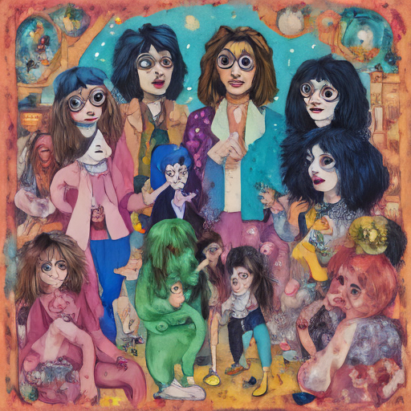

Today at Noel Fielding's house, we watched Eurovision Song Contest with a Gen Z twist. Instead of traditional contestants, we had masked avatars representing various music genres. It was like a digital dance party where everyone could join in, regardless of their real-life age or gender.

Keywords: Noel Fielding, Eurovision Song Contest, Gen Z
Fictional diary entry.